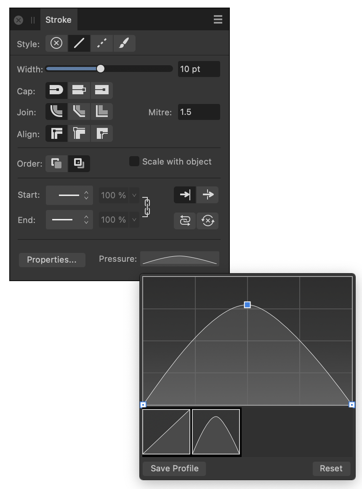

To create a pressure profile:
- On the Stroke panel, click the Pressure input box.
- Manipulate the graph to form the desired pressure profile. (See examples below.)
- Begin drawing your strokes.

| Node type | Description |
|---|---|
| End node (deselected)—drag to move both end nodes up/down at the same time | |
| End node (selected)—drag to move both end nodes up or down at the same time or click to move the end node independently of the other end node | |
| Added node (deselected)— drag to reposition the node which becomes selected | |
| Added node (selected)—drag to reposition the already selected node |
To save a pressure profile:
- Under the chart, click Save Profile. The profile shows under the chart.
To apply a custom pressure profile to a selected stroke:
- From the Stroke panel, click the Pressure option.
- Select a custom profile from below the chart. The chart will update, showing the chosen profile.

To reset the pressure profile:
- Select Reset below the chart.
The profile reverts to its default.